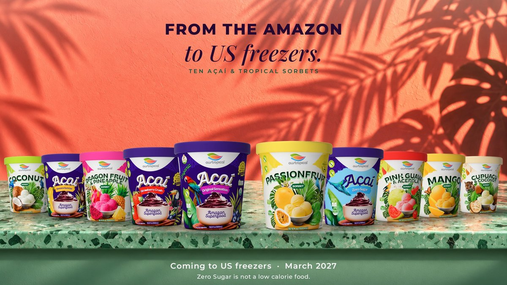

Press
Press kit
The full-range still, the 360 pack videos and the front-of-pack renders, for use in coverage of Austropical. Press contact: Ray Smith, President, North America, raysmith@austropical.co, 970-317-9458.
Email the press contactThe range still

All ten pints on the ledge. Downloads: 1920 × 1080 WebP · 1200 × 675 JPG. The footer of the image reads "Zero Sugar is not a low calorie food."
The 360 videos
Silent MP4, 12 seconds, the pack turning once, label to the front at the start. Square 720 × 720 for the pints and cups; 1280 × 720 for the range videos. Each carries "Coming to US freezers · March 2027" on screen, and the Zero Sugar videos carry "Not a low calorie food."
| Video | MP4 | Poster frame |
|---|---|---|
| The açaí range (four pints) | acai-range-16x9.mp4 | JPG |
| The fruit sorbets (six pints) | fruit-range-16x9.mp4 | JPG |
| Açaí Grab'n Go (four cups) | acai-cup-range-16x9.mp4 | JPG |
| Organic Açaí Original Sensation pint | original-sensation-pint-360.mp4 | JPG |
| Organic Açaí Original Sensation Grab'n Go cup | original-sensation-cup-360.mp4 | JPG |
| Açaí Banana Sunrise pint | banana-sunrise-pint-360.mp4 | JPG |
| Açaí Banana Sunrise Grab'n Go cup | banana-sunrise-cup-360.mp4 | JPG |
| Açaí Strawberry Crush pint | strawberry-crush-pint-360.mp4 | JPG |
| Açaí Strawberry Crush Grab'n Go cup | strawberry-crush-cup-360.mp4 | JPG |
| Açaí Zero Sugar pint (Not a low calorie food.) | zero-sugar-pint-360.mp4 | JPG |
| Açaí Zero Sugar Grab'n Go cup (Not a low calorie food.) | zero-sugar-cup-360.mp4 | JPG |
| Organic Coconut pint | coconut-pint-360.mp4 | JPG |
| Organic Mango pint | mango-pint-360.mp4 | JPG |
| Organic Mango Grab'n Go cup | mango-cup-360.mp4 | JPG |
| Passionfruit pint | passionfruit-pint-360.mp4 | JPG |
| Passionfruit Grab'n Go cup | passionfruit-cup-360.mp4 | JPG |
| Dragon Fruit & Pineapple pint | dragon-fruit-pineapple-pint-360.mp4 | JPG |
| Pink Guava & Acerola pint | pink-guava-acerola-pint-360.mp4 | JPG |
| Cupuaçu & Coconut pint | cupuacu-coconut-pint-360.mp4 | JPG |
Front-of-pack renders
Every flavor in every format on a white field, 1200 × 1200 JPG (WebP also available). These are the packs as printed today; the US reprint will replace them. The pictures below are the pint stills from the 360 videos (label to the front, 680 × 680 JPG: "Still" link).
-

-

-

-

-

-

-

-

-

-


Facts for editors
The product
- Açaí and tropical fruit sorbets: ten flavors, three formats (500 mL pint, 250 mL Grab'n Go cup, 10.2 kg foodservice bucket).
- Made by Xingu Fruit in Castanhal, Pará, Brazil. Product of Brazil.
- Three flavors USDA certified organic (Original Sensation, Mango, Coconut). All ten certified vegan (Vegan Australia). Nine kosher (Kosher Australia).
- Açaí Zero Sugar: Not a low calorie food.
The company
- Austropical Pty Ltd, Australia: sold through foodservice in Australia since 2018.
- Austropical LLC, 1346 Kremer Dr, Bayfield, CO 81122: the US distributor.
- Led in the US by Ray Smith, President, North America, a US Navy veteran.
The launch
- Coming to US freezers · March 2027.
- First shipment: Original Sensation and Mango in pints and Grab'n Go cups; the rest of the range follows.
- Foodservice buckets set up at Vistar, items TLL65266 to TLL65275; all 60 items live in GDSN.
- Social: @austropical on Instagram, TikTok and Facebook.
Name and mark: Austropical, lowercase "austropical" in the wordmark. Please do not add symbols to the name.